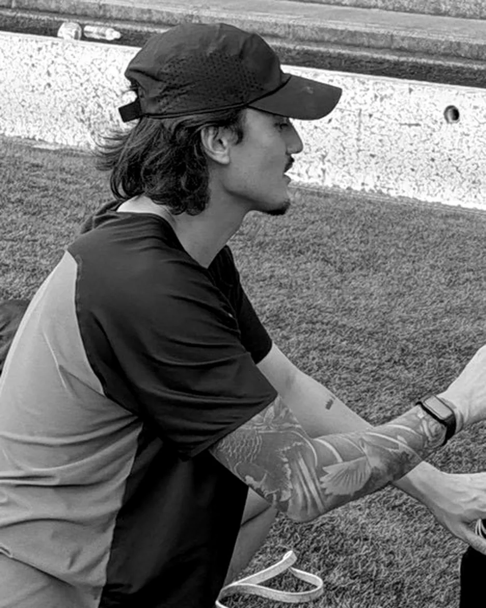

SPORTS ACADEMY
THE PRO
PERSPECTIVE.
プロの視点を、すべての選手に。
元プロ・専門コーチ陣が、サッカーの技術と、
キッズからアスリートを目指す選手までの運動能力を伸ばします。
Services
目的に合わせて選べる、
4つのサービス
気になるものをタップしてください。
01
 PERSONAL
PERSONAL
サッカーのパーソナル指導
受付中
身体能力とサッカーの技術を、マンツーマンで伸ばす。
- マンツーマン指導
- 初回体験 ¥5,500
- キッズ〜アスリート・年齢不問

03
SOCCER
新しいサッカーチーム
U-12・U-9 メンバー募集
選手一人ひとりが、生き生きとサッカーできるチームを。
- U-12・U-9
- 身体能力 × サッカー教育
- オフィシャルユニフォーム

Why VX
VXにしかない、3つのこと。
- 01
プロの視点
元Jリーガーの代表が、トップレベルで戦ってきた経験を伝えます。
- 02
身体能力×技術
多くの練習が見落としているフィジカルから。体の土台があるから、判断が速く、余裕を持ってプレーできます。
- 03
成長が見える
計測と、少人数・マンツーマンの指導で、一人ひとりの伸びを見逃しません。
Proof
いまも現場で、選手を指導しています。
2026年11月時点。12月14日からの合宿で4回目。
Founder
代表 シノヅカイッペイ

シノヅカイッペイ
IPPEY SHINOZUKA
代表・元プロサッカー選手（MF）
Jリーグ通算（J1・J2リーグ戦／2017〜2022年）出典：Football LAB
- 2012–13U-18ロシア代表
- 2012–17スパルタク・モスクワ（ロシア）
- 2017–19横浜F・マリノス（J1）
- 2019–20大宮アルディージャ（J2）
- 2021柏レイソル（J1）
- 2022アルビレックス新潟（J2）
- NOWVX SPORTS ACADEMY 代表
16歳でロシアへ渡り、スパルタク・モスクワでプロのキャリアをスタート。U-18ロシア代表を経て、Jリーグでは4クラブでプレーしました。
トップレベルで戦ってきた経験を、次の世代の選手へ。
About
VX SPORTS ACADEMYとは
VX SPORTS ACADEMYは、シノヅカイッペイが代表を務める、サッカーの技術と、年齢を問わずキッズからアスリートを目指す選手までの運動能力を伸ばすスポーツアカデミーです。
元プロ・専門コーチ陣が、身体能力とサッカーの技術を一人ひとりに合わせて指導します。
FAQ
よくある質問
VX SPORTS ACADEMYとは何ですか？
サッカーの技術と、年齢を問わずキッズからアスリートを目指す選手までの運動能力を伸ばすスポーツアカデミーです。サッカーのパーソナル指導「VX PERSONAL」、キッズからアスリートまでのジム「VX GYM」、サッカーチーム「VX SOCCER」、アパレルブランド「VX APPAREL」の4つを運営しています。
代表はどんな人ですか？
代表のシノヅカイッペイは元プロサッカー選手（MF）です。U-18ロシア代表、スパルタク・モスクワ（ロシア）を経て、横浜F・マリノス、大宮アルディージャ、柏レイソル、アルビレックス新潟でプレーしました。Jリーグ通算95試合11ゴール9アシスト（J1・J2リーグ戦）です。
どこにありますか？
VX GYMは東京・西麻布に2027年1月オープン予定です。VX PERSONALは東京・神奈川・千葉・埼玉で対応しています。
今申し込めるサービスは？
VX PERSONAL（初回体験 ¥5,500・税込）は受付中です。VX GYMは先行予約、VX SOCCERはU-12・U-9のメンバーを募集中、VX APPARELは予約注文を受け付けています。
スポンサー・協賛の依頼はどこからできますか？
LINE公式アカウント、またはInstagram（@vx_sports_academy）のDMからお送りください。
問い合わせ方法は？
LINE公式アカウントから、メッセージでお問い合わせください。最新情報はInstagram（@vx_sports_academy）でもお知らせしています。
情報更新日：2026年11月18日
Start
はじめ方は、3ステップ。
- 01
LINEで友だち追加
下のボタンから、VXのLINEを追加します。
- 02
知りたいことを送る
「体験」「ジム」「サッカー」など、ひと言送るだけ。
- 03
ご案内が届く
日時・料金・次の流れをお送りします。